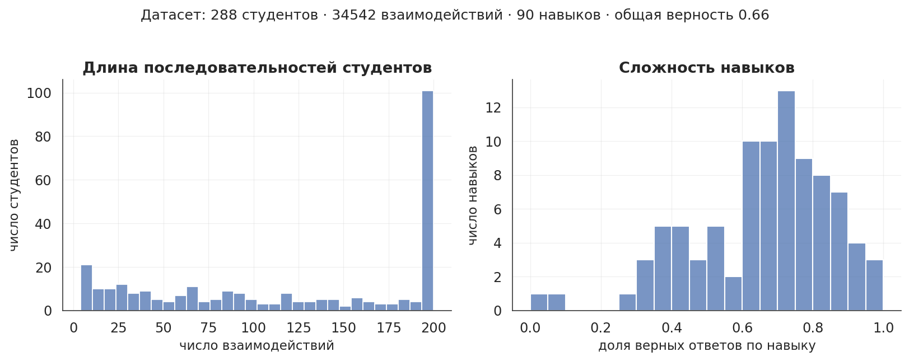
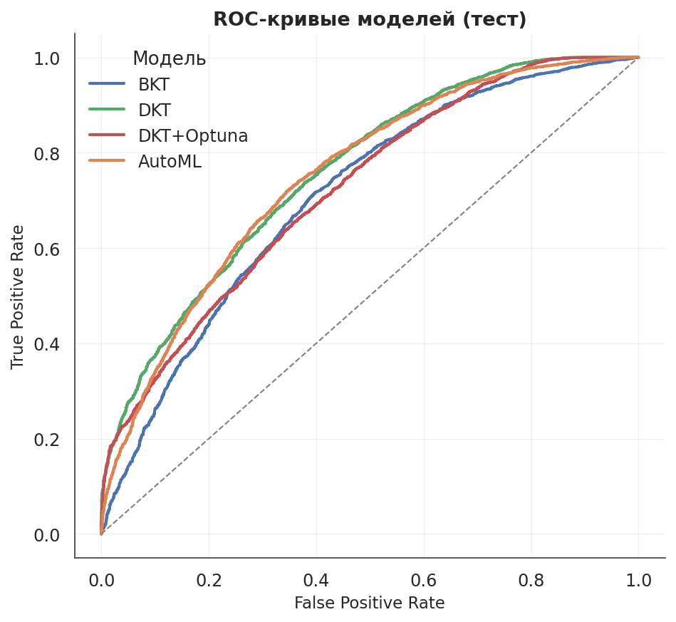
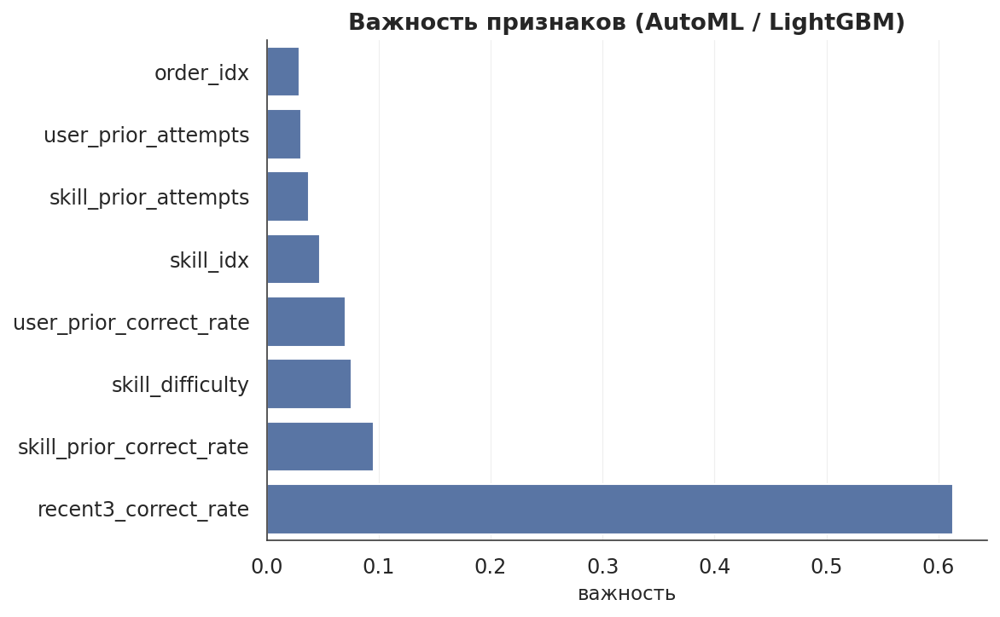

От сырых логов студентов — к воспроизводимому AutoML-решению
в Docker + CI/CD
Платформа подбирает следующее задание под зону ближайшего развития. Выше прогресс — ниже отток.
Падение прогноза P(correct) сигнализирует о риске задолго до формального провала контрольной.
Метрика «сложность навыка» помогает методистам перерабатывать темы со слабой динамикой освоения.
Вход: последовательность пар (skill_id, correct) до шага t.
Выход: вероятность P(correct = 1) на шаге t+1.
Протокол: one-step-ahead на отложенных студентах.
Сплит: по студентам 70 / 10 / 20 — прошлое одного студента не утекает в train и test одновременно.
Инвариантна к выбору порога, устойчива на несбалансированных задачах (доля верных = 63.5%).
Дополнительно: Accuracy · F1 · RMSE · log-loss
data/processed/features.parquet
data/processed/interactions_long.parquet
data/processed/dataset_stats.json

Принцип: ни один признак не использует метку текущего шага. Всё считается строго по прошлому.
Природа: HMM с 2 состояниями (освоен / не освоен).
Параметры: p_init, p_learn, p_slip, p_guess — свои на каждый навык.
Обучение: EM, 30 итераций. Роль: интерпретируемый baseline.
Архитектура: Embedding → LSTM → Linear.
Гиперпарам.: embed=64, hidden=64, dropout=0.2, lr=5e-3, 30 эпох.
Лосс: BCE по позициям следующего шага.
Поиск: TPE-сэмплер, 25 trials, 5 гиперпараметров.
Метрика: AUC на val; лучшая конфигурация переобучается полностью.
embed=32, hidden=128, dropout=0.49, lr=2.9e-3
Бюджет: 600 c. Кандидаты: lgbm, xgboost, rf, extra_tree.
Стратегия: CFO (Cost-Frugal Optimization).
Выбрано: xgboost · 5123 деревьев · lr=1.1e-3
Автоматический выбор модели и гиперпараметров
FLAML на признаковой матрице — алгоритм и его настройки за фиксированный бюджет времени (600 c). Победитель: xgboost.
Автоматический поиск архитектуры нейросети
Optuna (TPE) поверх DKT: 5 гиперпараметров, 25 trials. Найден сильный dropout = 0.49 — модель сама «увидела» переобучение.
Сквозная оркестрация всего цикла
Один python -m src.pipeline воспроизводимо проходит ETL → 4 модели → оценка → визуализация → логирование. Никаких ручных шагов между стадиями.
| Модель | AUC | Acc | F1 | RMSE |
|---|---|---|---|---|
| BKT | 0.7200 | 0.7046 | 0.7888 | 0.4440 |
| DKT | 0.8015 | 0.7504 | 0.8175 | 0.4129 |
| DKT + Optuna | 0.8036 | 0.7511 | 0.8197 | 0.4116 |
| AutoML (xgb) | 0.7914 | 0.7455 | 0.8173 | 0.4149 |


| Модель | Время, с | Пик RSS, MB | Средний CPU, % |
|---|---|---|---|
| BKT | 13.5 | 588 | 99 |
| DKT | 63.7 | 626 | 99 |
| DKT + Optuna | 712.6 | 298 | 100 |
| AutoML (FLAML) | 617.8 | 2 389 | 396 |
AUC 0.804 = уровень публикуемых бенчмарков. Калибровка близка к идеалу — вероятности можно использовать напрямую в логике рекомендаций.
3 уровня автоматизации: подбор гиперпараметров, поиск архитектуры, сквозная оркестрация. Перезапуск на новых данных = одна команда.
DQ-Gate 5/5, дрейф 0/8, ресурсы логируются. Любая регрессия данных или производительности видна сразу в MLflow.
Docker + GitHub Actions: каждый push → линтер, тесты, сборка, smoke-прогон. Один образ — для разработчика, CI и заказчика.
Топ-факторы — прошлая успешность по навыку и по студенту. Понятный язык для продукта, UX и методистов.
SAKT / SAINT (потенциал AUC 0.82–0.84), MLflow Model Registry, FastAPI-сервис и публикация образа в GHCR.